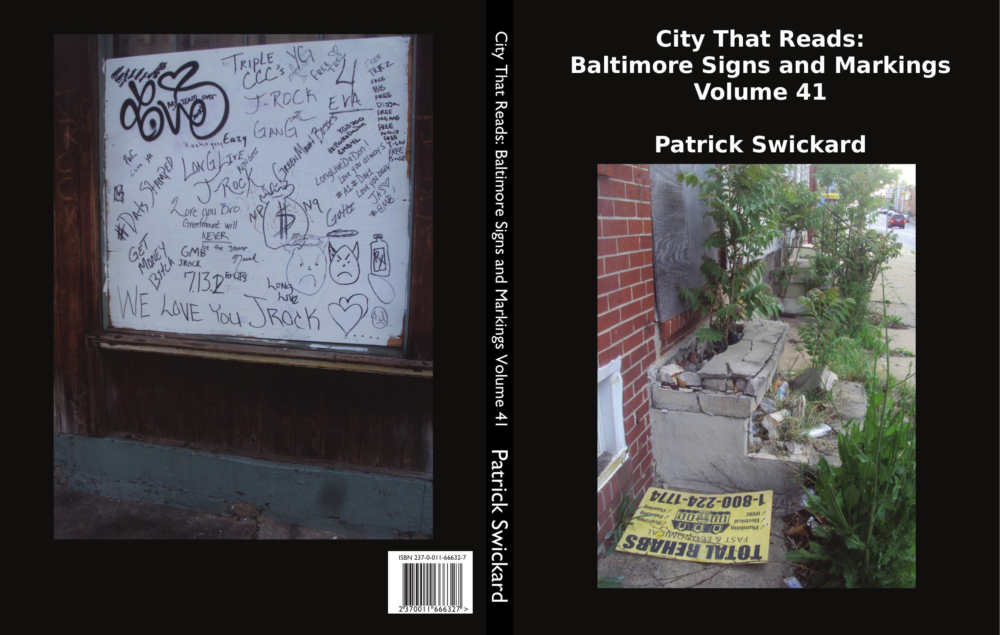

99 Luftballons
Auf ihrem Weg zum Horizont
Hielt man für Ufos aus dem All
Darum schickte ein General
'ne Fliegerstaffel hinterher
Alarm zu geben, wenn's so wär
Dabei war'n dort am Horizont
Nur 99 Luftballons
Important notices. Total rehabs. Greenmount. Love. Bananas. Farmers market. Guest nametags. Juror stickers. Henrietta Lacks. I am a man. Balloons. Yellow tape and orange fencing. Trabajo inmediato. Chinches. Immigrants welcome. FMOIG. Johnston Square. Gaia. Gardening. Vacant X's. Madison Square. Church signs. Waves and roses. Biddle Street. Collington Commons. Adopted blocks. Party posters. Safe Streets. The public is warned to keep away. Howard Street Bridge. Toynbee tiles. Downtown. Custom grills. Zoning notices. Pager instructions.
Includes:
Random sample page: